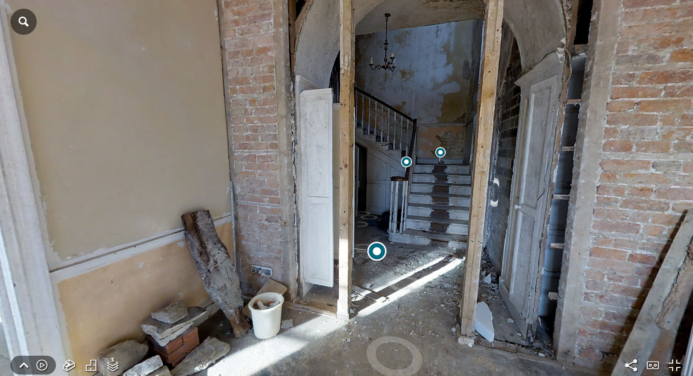

Rakennus dokumentointi

Miksi virtuaalikierros on paras tapa dokumentoida rakennusprojektia?
Rakennusprojektien dokumentointi on kriittinen osa laadunvalvontaa, viestintää ja tulevaisuuden viiteaineistoa. Virtuaalikierrokset tarjoavat täydellisen, interaktiivisen tavan tallentaa rakennusprosessi ajantasaisesti ja yksityiskohtaisesti. Tässä on kuinka virtuaalikierrokset nostavat rakennusdokumentoinnin uudelle tasolle:
Virtuaalikierrosten edut rakennusdokumentoinnissa
1. Täydellinen visuaalinen arkisto
- 360° kuvat ja 3D-mallit tallentavat jokaisen rakennusvaiheen tarkasti
- Mahdollistaa "ajassa taaksepäin katsomisen" milloin tahansa
- Korvaa perinteiset valokuvat laajemmalla ja informatiivisemmalla materiaalilla
2. Laadunvalvonnan tehokas työkalu
- Mahdollistaa etätarkastukset ilman paikalla käyntiä
- Helppo verrata suunnitelmaa ja todellista tilannetta
- Mahdollistaa virheiden havaitsemisen ajoissa
3. Selkeä viestintä kaikille osapuolille
- Rakennuttajat, suunnittelijat ja urakoitsijat näkevät saman ajantasaisen tilannekuvan
- Vähentää väärinkäsityksiä ja viestinnällisiä ongelmia
- Mahdollistaa merkinnät ja kommentit suoraan virtuaalikierrokseen
4. Tulevaisuuden viiteaineisto
- Luo kattavan digitaalisen arkiston rakennuksesta
- Korvaa perinteiset piirustusarkistot helpommin käsiteltävällä muodolla
- Auttaa huoltotyössä ja remonteissa myöhemmin
Virtuaalikierros voidaan totetutta kahdella eri tavalla. tutustu niiden eroihin:
Miten prosessi etenee:
- sopimus - Sovimme kuvauksien aikavälit tai ajan kohdat, ja kierrosten sisällön.
- Kirjallinen sopimus - Kirjoitamme kirjallisen sopimuksen molempien ehdoilla turvaaksemme molemmat osapuolet.
- Kuvaus - Tulemme sovittuna ajankohtana kuvaamaan työmaan.
- Valmistaminen - käsittelemme kuvat ja pistämme kierroksen yhteen sovittujen elementtien kanssa.
- lähetämme linkin ja tunnukset, joilla pääsette kirjautumaan kyperturvalliseen järjestelmään, jossa pääsette katsomaan kierrosta missä vain, millä vain, milloin vain.
Jokainen SuperVisionin työntekijä tulee olemaan vakuutettu, sekä heillä tulee olla turvakengät, kypärä ja huomioliivi.
Ota yhteyttä!
Ota yhteyttä ja kerro miten voimme auttaa sinua hyödyntämään virtuaalitodellisuutta Rakennus dokumentointi kohteessasi. Rakennamme juuri sinun tarpeisiisi sopivan ratkaisun!